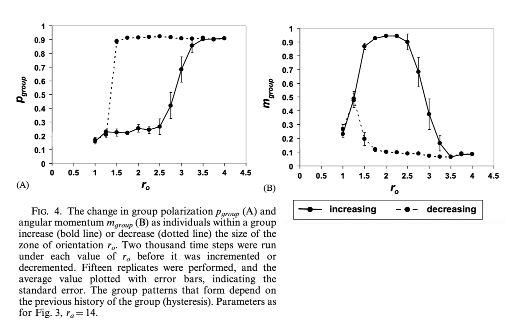

Week 5: Agent-based modelling#
We’ve already seen an agent-based model (ABM).
In fact, we started this unit with one… Schelling segregation was one of the earliest agent-based models.
Because what other options are there for modelling if we consider a system like this?!
Why is the Parable of the Polygons not a cellular automata?
The key reason Schelling’s segregation model is not a cellular automaton is that in a cellular automaton, the grid cells themselves are the entities (their state changes according to fixed, synchronous, rule-based updates from their neighbours). In Schelling’s model, the agents are the entities. The agents occupy cells, can move between them, and may leave a cell empty. The rules are about agent behaviour (satisfaction, movement), not about the cell’s own state changing in place.
You might like to consider how you could reformulate Schelling’s segregation model into a cellular automaton by shifting the focus from agents to locations as the primary entities that update. How robust would the behaviour be to this change in modelling framework?
This week the question of ‘how to model complex systems’ will really come together for us.
Many of the concepts have been raised already or apply to previous topics too but with ABMs we’ll see everything all together for the first time.
At the end of this week you’ll be in a position to get stuck into your project!
Collective behaviour#
When large numbers gather, unexpected and seemingly spontaneous events and behaviours can occur. This is a feature of many individuals responding to their local environment.
With early roots in psychology, collective behaviour has had a role in explaining many destructive and negatively perceived events (e.g. contagion, collective conscious, groupthink, mob mentality and fads).
https://www.youtube.com/watch?v=9fVPQ6X4Fw8
On the other hand, collective motion, a sub-class of collective behaviour, is often viewed in a positive light as the movement of many personally motivated individuals will often manifest in coordination and adaptability, tending to reinforce social norms rather than violating them.
Collective motion occurs across many time and length scales e.g. microorganelles coalesce into biological building blocks, which grow, spread and self-assemble into organs, that form people, who in turn crowd and travel as part of wider societies.
This nested organisation means the same underlying principles can emerge in vastly different contexts. Whether in the migration of cells repairing tissue, the flocking of birds avoiding predators, or commuters instinctively adjusting their pace in a busy station, the choreography of collective motion can enhance efficiency, safety, and resilience without any single individual directing the whole.
Flocking#
Some of the most impressive and well-known examples of collective motion are displayed by flocks of birds.
Background#
Starlings feed in the countryside during the day and return to the city centre just before sunset.
Before descending on the trees for the night they spend around half an hour performing aerial maneuvers over their roost i.e. predictable time and place (good for scientists and for predators)
Explanations of unified action that involve telepathy, military-like instruction and spread of impulse are theories of the past.
Birds are individually motivated and making decisions based on a local environment. They aim to:
stay close
but not too close
move in a similar direction to the birds surrounding them
Western Australia has a ‘shoot to kill’ order in place for starlings. Instead, we have budgies…
(To most people) A flock is the collective noun for a group of birds but each species also has it’s own:
‘murmuration’ of starlings (Sturnus vulgaris)
‘parliament’ of owls
‘chatter’ of budgerigars etc…
Mathematicians think slightly differently about this, typically considering a group to be a “flock” only when it is moving in concert with (at least) locally ordered collective motion.
Hence, other animals, slime/bacteria, man-made colloids, robots and even cancer cells can ‘flock’.
In each case, there is a sense that the flock is an entity on its own but the individuals themselves have no sense of the group as a whole.
Modelling flocks#
The complexity of these systems is too great to be described by differential equations alone.
But this isn’t really the point…
More important, is that every individual has autonomy over its movement that cannot be sufficiently captured in a framework that smooths behaviour into a collective average.
It is, however, straightforward to capture individually-defined properties such as agency, adaptivity and heterogeneity in decision-making ability of an individual with non-physical interactions and heuristic movement rules.
Motion described in this way of course can’t be solved exactly but it can be numerically simulated.
This bottom-up view is a very different modelling paradigm - and a very different way of looking at the world (perhaps it’s starting to feel natural after a few weeks of complex systems thinking?)
Standard model examples#
from a computer scientist: Craig Reynold’s, 1987, boids
from a physicist: Vicsek, 1995
from a biologist: Couzin, 2002
Batman Returns: 1992 Tim Burton was the first to use boids
Show code cell source
from IPython.display import YouTubeVideo
YouTubeVideo("lvBmrMEd254", width=1000)
# https://www.youtube.com/watch?v=lvBmrMEd254
Humans are another story…#
Some explorables#
Pedestrians: The walking head
Traffic: Berlin 8:00AM
Disease spread: I herd you
Birds, crowds and cars examples of collective motion but collective behaviour is more general than this and ABMs are just as well-suited when an agent state is not defined by its velocity.
ABMs include cellular automata and dynamical networks as special cases with very constrained rules about movement, memory, and interaction.
Cellular automata can be seen as a special case of ABMs where the “agents”:
are the cells
occupy fixed positions on a grid
have no memory beyond their current state
update synchronously using purely local rules.
Dynamical networks can also be framed as ABMs where the “agents”:
are the nodes
states change according to interaction rules defined by the network edges (which may be fixed or evolve over time.)
Agent-based modelling (ABM)#
Agent-Based Models (ABMs) are one of the most general and open-ended frameworks for modelling complex systems, with applications across urban planning and transportation, economics and finance, computational biology, ecology, and the social sciences.
They are the primary computational approach for studying system dynamics that emerge from the bottom up. ABMs are popular because they are flexible, allow straightforward adoption and adjustment of individual-level properties, operate naturally at a mesoscopic scale, and are often intuitive to interpret.
ABMs are particularly valuable for exploring how individual decisions shape system-level behaviour, as they make it possible to incorporate information we know (or believe) influences those decisions.
The “agents” in these models are not sub-atomic particles or billiard balls, whose behaviour is entirely dictated by physical forces. Instead, they represent people, animals, companies, or other autonomous entities that: i) perceive their environment; ii) make decisions; and iii) take actions.
To create a model#
We need to define:
the world and environment (including definition of dimension and any boundary conditions)
the agents
the possible states of the agents (aka attributes/properties such as age, knowledge, happiness, and location)
the initial state
the interaction network (typically local but not necessarily)
the rules for updating the agent states, which evolve in time as a function of repeated interactions. The rules describe how an agent interacts:
‘internally’
with other agents via their networks
with the environment (such as stigmergy, which allows for indirect interaction between agents as they communicate and coordinate their actions through informational signals encoded in the environment).
Except for the existence of agents none of these elements are strictly required
What are each of these model elements for the example systems we've seen?
birds
traffic
disease
Takeaway#
Individual motivations may cause something that appears cooperative at the group-level to emerge.
But cooperation per se was not necessarily the objective…
Show code cell source
from IPython.display import YouTubeVideo
YouTubeVideo("ofeYisqfOO8", width=1000)
# https://www.youtube.com/watch?v=ofeYisqfOO8
What do we want from these models?#
Recall from week one that there are two options to build a model:
using model assumptions that are derived from empirically observed phenomena, and then produce previously unknown collective behaviors by simulation.
(micro-known to produce macro-unknown)
we aim to make predictions using validated theories
using hypothetical model assumptions, and then reproduce empirically observed collective phenomena by simulation.
(micro-unknown to reproduce macro-known)
Schelling model used this approach
we aim to explore and develop new explanations of empirically observed phenomena
To model the birds we are aiming to reproduce patterns qualitatively similar to what we observe in nature.
ABMs are an interactive modeling experience and nice playgrounds for testing ‘what-if’ scenarios in a virtual world. For an ABM to also be good science and give us meaningful conclusions, we need to wrap the technical aspects of its design up with proper methodology and ensure we are considering the:
specific problem to be solved by the ABM
availability of data
method of model validation
Sayama notes that it is “generally not easy to conduct an elegant mathematical analysis of an ABM”, which is why his textbook has no “Analysis” chapter for them. On this, I disagree — I believe meaningful conclusions require proper analysis, even if that analysis is not mathematically “elegant” in the traditional sense.
The Complexity Explorables are typically lacking in the analysis department.
Vicsek model#
Quote from this wonderful article: The Physics of Life, Popkin, 2016
This model was introduced by Tamás Vicsek (and colleagues not fortunate enough have the model named after them) in 1995 to simulate the collective motion of self-propelled particles.
Vicsek’s particles (aka agents) adjusted their velocities to align with the average velocities of the neighbouring particles.
That’s it. Nothing more, nothing less. And it is exactly this minimal nature that gives us a chance of mathematical analysis.
The Vicsek model is the canonical example of an agent-based model of collective motion with influence defined locally and emergence analysed globally.
Our understanding of emergent phenomena such as phase transitions and criticality, and the quest for universal laws and patterns of collective behaviour has gained enormous benefit from the study of simple models like this. Once this simple, abstract system is completely understood, we stand a chance of increasing the complexity to understand more biologically realistic systems.
This model plays a prototypical role, similar to the one played by the Ising model for equilibrium ferromagnetism and has been adopted as the starting point for many generalisations and variations.
Static precursor models#
Ising model#
A model of ferromagnetism in statistical mechanics.
By HeMath - Own work, CC BY-SA 4.0,
The model consists of discrete variables that represent magnetic dipole moments of atomic “spins” that can be in one of two states (+1/-1, or “up”/“down”).
Neighbouring spins that agree have a lower energy than those that disagree; the system tends to the lowest energy but heat disturbs this tendency, thus creating the possibility of different structural phases.
The model allows the identification of phase transitions as a simplified model of reality.
XY model#
The XY model is a generalisation of the Ising model in which each spin can point in any direction within a plane, so its state is a continuous variable \(\theta \in [0,2\pi)\).
Neighbouring spins that are more closely aligned (i.e. the angle between neighbouring spins is smaller) in the plane have lower energy. As with the Ising model, the system tends to minimise its total energy by increasing alignment across the lattice. If the dipoles are initialised randomly, local interactions can lead to the emergence of large-scale order through gradual alignment.
Heisenberg model#
The Heisenberg model is a further generalisation in which each spin can point in any direction in three-dimensional space. Its state is given by two continuous angles \((\theta, \phi)\) describing a point on the unit sphere \(S^2\).
Neighbouring spins that are more closely aligned have lower energy, and the system tends to minimise its total energy — but thermal fluctuations can disrupt alignment, leading to different magnetic phases.
This model is used to describe isotropic magnets where spins have no preferred axis or plane, such as many transition metal oxides, and can also be applied to other vector fields with full 3D orientation freedom.
Summary#
Model |
Degrees of Freedom |
State Space |
Typical Physical Situation / Example Materials |
|---|---|---|---|
Ising |
1 (discrete) |
\( \{+1, -1\} \) |
Uniaxial ferromagnets (e.g., Fe with strong anisotropy); binary-state systems like lattice gas models or opinion dynamics |
XY |
1 (continuous) |
\( \theta \in [0, 2\pi) \) |
Planar magnets; thin superfluid helium-4 films; 2D superconductors (phase of order parameter) |
Heisenberg |
2 (continuous) |
\((\theta, \phi)\) on \(S^2\) |
Isotropic magnets with freely orientable spins (no preferred axis), e.g., many transition metal oxides |
Inspired by the Heisenberg model, Vicsek and his team began to think about what it would mean for the spins in a ferromagnet to have the freedom to move (turning a static equilibrium spin model into a non-equilibrium model of collective motion).
Original implementation#
Initialise the domain (the world/environment)
Square 2D domain with periodic boundary conditions so agents effectively move on a torus.
The environment has no state
Initialise \(N\) agents and their states/attributes
Agents are point particles
Position: \(\mathbf{x}_i(t) = (x_i, y_i)\) — coordinates at time \(t\), with \(\mathbf{x}_i(0)\) set randomly
Velocity: \(\mathbf{v}_i(t) = v \,(\cos\theta_i(t), \sin\theta_i(t))\), where \(v\) is constant and \(\theta_i(t)\) is the heading, with \(\theta_i(0)\) set randomly.
Define the interaction network
An agent’s neighbours are all agents (including itself) within a circle of radius \(r\) centred at \(\mathbf{x}_i(t)\).
This is a metric neighbourhood.
Compute the dynamics
Calculate \(\langle \theta(t) \rangle_r\) = average of all headings in the neighbourhood.
Averaging is done using the vector sum of neighbour velocities to avoid issues with angular wrap-around.
Update agent states
New heading is the average heading plus a noise term:
\[ \theta_i(t+\Delta t) = \langle \theta_i(t) \rangle_r + \Delta\theta_i \]where \(\Delta\theta_i \sim U[-\eta/2, \eta/2]\).
New position is given by:
\[ \mathbf{x}_i(t+\Delta t) = \mathbf{x}_i(t) + \mathbf{v}_i(t)\,\Delta t \]
Synchronous updates for all agents at each time step.
Apply periodic boundary conditions after the move.
Note this describes “overdamped dynamics” as the inertial effects are negligible, and the motion of the agents is primarily determined by the forces acting on them (change their relative position according to their velocity fluctuations), rather than by their own momentum. The system is far from equilibrium because the particles are self-propelled.
Time step \(\Delta t\)
Usually set to \(1\) without loss of generality in simulations, so updates occur in discrete, synchronous steps.
Noise amplitude \(\eta\)
\(\eta = 0\): perfectly deterministic alignment.
\(\eta = 2\pi\): maximum meaningful noise — headings become uniformly random in \([-\pi, \pi)\) at each time step, completely destroying alignment.
In the original model:
we choose a convenient set of space and time units, such that \(\Delta t = r = 1\)
set \(\text{speed}=v=0.03\).
model behaviour only depends on three control parameters: the noise amplitude \(\eta\) and total density of particles \(N/V\).
Limiting cases#
Limiting cases are often interesting and worth exploring as the model reduces to well-known models of equilibrium statistical physics
e.g. in the limit, \(v \rightarrow 0\), the interaction network is fixed and the individuals are just selecting a new direction without moving at each time step. The model reduces precisely to that of a two-dimensional XY model. We interpret he velocity of the individual as the local spin, the strength of the alignment interaction is proportional to the density like an external magnetic field and the noise is like temperature
Other limiting cases:
\(r\rightarrow 0\): non-interacting persistent random walkers with equilibrium distribution with some temperature given by the noise term
\(r \rightarrow \infty\): long ranged interaction, system is globally coupled and the connectivity matrix is trivially static
\(v \rightarrow \infty\): for \(v >> L\), any small fluctuation in the orientation will push nearby particles infinitely apart. With periodic boundary conditions this is equivalent to random rewiring of interactions and hence motion decouples from alignment
It is not possible in general to deduce properties of the Vicsek model in general from the study of the limiting cases.
Qualitative analysis#
The first thing we did with our model is to simulate it and play around, observing how the agents move over time and the group behaviour that emerges. This gives us a qualitative understanding of the behaviour of the collective and how it depends on the parameter settings for \(L\) (which is effectively density) and \(\eta\) (the amount of stochasticity).
The simulations are nice for our understanding but they are typically relegated to supplementary material in publications in favour of snapshots in time or trajectories, e.g.:
Fig from original publication of Vicsek et al, 1995
Again, we are seeing simple interactions among individuals leading to complex global patterns. The variety in behaviour is a consequence of the parameters:
density via the size of the domain, \(L\), with fixed particle number
noise, \(\eta\)
There are other parameters in this model, such as the speed \(v\) but ‘According to our simulations, in a wide range of the velocities \((0.003 < v < 0.3)\), the actual value of \(v\) does not affect the results’ - Vicsek et. al, 1995. Where, ‘the results’ refers to the physical properties of the emergent behaviour.
Many other model variations are equally irrelevant:
noise distributed according to a Gaussian
small, short ranged repulsion force to account for volume exclusion
position \(x_i\) at time \(t + \Delta t\) may be determined by the velocity at time \(t+\Delta t\) and not at time \(t\)
…
We’d like a more general understanding of how these parameters influence the behaviour. In particular, we want answers to:
Under what conditions are the different behaviours are happening?
How do we transition from one behaviour to another?
This requires a quantitative analysis.
Quantitative analysis#
We seek a generalisable and statistically reliable description of observations via appropriate metrics at the individual or group level.
Flocking models lean heavily on methods and measures successfully used in statistical physics
Order parameters characterise how ordered the macroscopic state of the system is.
In keeping with the spin-model analogy, the Vicsek model used the average normalised velocity as a polarisation order parameter, \(\Phi\):
where:
\(N\) is the number of agents
\(\mathbf{v}_i\) is the \(i^\text{th}\) agent’s velocity
\(v\) is the (constant) speed of all agents
This is a value that ranges from 0 to 1, where 0 indicates no order and 1 indicates maximal order and coherent motion (this is why we can refer to it as an order parameter).
It tells us something about the group behaviour.
Note that in physics and complex systems the word “parameter” in order parameter does not mean an arbitrary input you choose (as in programming or mathematical modelling). An order parameter is a measurable quantity that emerges from the system and characterises its macroscopic state, e.g., magnetisation in the Ising model, density of aligned motion in the Vicsek model. In other contexts, the same role might be called a state variable or state descriptor — a value that summarises the system’s current condition.
Based on the behaviour regimes reported by Vicsek (see previous figure), what value would you expect for the order parameter $\Phi$ in each case?
Can you think of scenarios that are not truly disordered, yet would still produce an order parameter close to zero? How might this be dealt with?
Expected values by regime:
Disordered (high noise / low density): headings are uncorrelated, so \(\Phi \approx 0\) (with fluctuations of order 1/√N).
Ordered flock (low noise / high density): near-global alignment, so \(\Phi\) is large, typically between 0.6 and 1, decreasing as noise increases.
Band/coexistence regime (near the transition, especially with vectorial noise): alternating high-density aligned bands in a disordered background lead to instantaneous \(\Phi\) oscillating; the time-averaged \(\Phi\) can take an intermediate value, or the system may switch between \(\Phi \approx 0\) and \(\Phi>0\) in finite domains.
Some “Not disordered” scenarios with \(\Phi \approx 0\):
Counter-flows: two equally sized groups moving in opposite directions; local order is high but global vectors cancel.
Vortex or milling: agents circulate around a common centre; headings cover all angles, giving a near-zero net vector.
Multi-domain mosaic: large patches of alignment with different headings that balance out.
Nematic order (head–tail symmetry): agents align along the same axis but half move in each direction; polar order \(\Phi \approx 0\) but nematic order is high.
Oscillatory reversal: the entire group repeatedly reverses direction; instantaneous \(\Phi\) is large but time-averaged \(\Phi\) is near zero.
These would require additional order parameters or metrics to properly capture the behaviour.
Parameter sweeps#
The phase transitions are bifurcations in the macroscopic properties, captured by changes in the relevant state variables.
We track these properties as we vary the relevant parameters.
For Vicsek, that means we compute the polarisation order parameter for each simulation as we vary the noise and/or density.
The Vicsek model exhibits a phase transition between a disordered state and an ordered, coherently moving state. It’s akin to a transition from solid to liquid to gas as temperature and pressure are varied.
At high noise (or low density), agents move in uncorrelated directions and the system is disordered with \(\Phi\approx 0\). At low noise (or high density), local alignment interactions propagate across the system, and agents move collectively in approximately the same direction — the system is ordered, with \(\Phi\approx1\). The transition occurs at a critical noise amplitude \(\eta_c\) (for fixed density and speed) or, equivalently, at a critical density \(\rho_c\) (for fixed noise).
The nature of the transition has been hotly debated. It depends on the noise implementation:
With scalar (intrinsic) noise, the transition is generally continuous (first-order) in the thermodynamic limit.
With vectorial (extrinsic) noise, it is typically discontinuous, (second-order) with coexistence of ordered and disordered phases near the threshold.
Finite-size effects can blur this distinction, so careful scaling analysis is required to determine the transition type. See the original publication and the work of Baglietto and Albano, 2009 for more detail.
Vicsek varied each parameter separately. A more common approach nowadays is to address everything at once.
Here Couzin computes two different order parameters (polarisation and rotation) and shows the mean of 30 replicates:
Fig from Couzin et al, 2002
Another key difference in Couzin’s approach was to explore what happens without re-initialising the system when changing parameters between simulations. i.e., each new run began from the final state of the previous one.
Under these conditions, interesting things can happen:

This effect is called hysteresis. It means that the state of the system depends on its history.
Ensemble runs#
To properly demonstrate phase transitions we must show that they occur in general, because a single simulation doesn’t tell you much (and may even be misleading).
The ensemble of simulations is necessary to:
capture the range of possible outcomes owing to variability (inherent randomness, stochastic processes, or sensitivity to initial conditions)
explore effects of uncertainty, providing a distribution of possible outcomes
reduce noisy or outlier results and identify (and estimate probability of) rare events
give a better understanding of parameter sensitivities
highlight emergent behaviour as consistent patterns or structures that emerge across different simulations
validate the robustness of model predictions.
This gives a more comprehensive and reliable picture of the system.
The original paper by Vicsek runs five simulations at each parameter setting and states that the error bars are generally within the size of the symbol. If this wasn’t the case you’d need to show the variation (quartiles, extreme values, standard deviations,…).
Further considerations#
In the Vicsek model, each individual tends to align its direction of motion with that of its neighbours, while being perturbed by noise. Yet, as we will see, even within this seemingly simple rule there are many choices to make and those choices can shape the system’s behaviour in important ways. Indeed, there has been some controversy amongst researchers regarding the nature of the order-disorder transition in particular!
Integration details#
This is a backward update
An alternative is to consider a forward update
Noise#
The role of randomness in models of complex systems:
account for uncertainties and the unpredictable nature of complex systems
reflects the inherent variability in complex systems
analagous to temperature in equilibrium systems (driving phase transitions)
gives a more robust and realistic model, e.g. showing how coherent motion can emerge even in the presence of imperfections
Different ways noise can be added in Vicsek-type models:
Noise type |
What it means |
Typical equation (2D case) |
Notes |
|---|---|---|---|
Scalar (Intrinsic) noise |
Each agent calculates the perfect average heading of its neighbours but moves in that direction with some error. |
\(\theta_i(t+1) = \langle \theta(t) \rangle_r + \Delta\theta_i\) \(\Delta\theta_i \sim U[-\eta/2, \eta/2]\) |
Models imperfect execution of movement. Implemented in the original Vicsek model. |
Angular Extrinsic noise |
Each neighbour’s heading is computed with some error before computing the average heading. |
\(\theta_i(t+1) = \big\langle \theta_j(t) + \Delta\theta_j \big\rangle_r\) |
Represents errors in sensing/communication of neighbour directions. |
Vectorial (Extrinsic) noise |
Add a random vector to the average velocity vector before normalising. |
\(\mathbf{v}_i(t+1) = v_0 \frac{\langle \mathbf{v}(t) \rangle_r + \boldsymbol{\xi}_i}{|\langle \mathbf{v}(t) \rangle_r + \boldsymbol{\xi}_i|}\) \(\boldsymbol{\xi}_i\) = random vector with magnitude related to \(\eta\) |
Extends trivially to any spatial dimension because the noise is added in Cartesian components. Similar to scalar noise in that the agent “knows” the perfect average direction but the modelling assumption about where the error comes from is different. |
Additive positional noise |
Random displacement is added to the agent’s position after movement. |
\(\mathbf{x}_i(t+1) = \mathbf{x}_i(t) + \mathbf{v}_i(t+1)\Delta t + \boldsymbol{\zeta}_i\) |
Models environmental disturbances like turbulence or tracking error; does not directly affect heading. Also similar to vectorial noise - the difference is when and how the perturbation is applied in the update loop. |
Noise in speed |
Speed fluctuates randomly around a mean \(v_0\). |
\(v_i(t+1) = v_0 + \delta v_i\) |
Captures agents whose propulsion is not perfectly constant (e.g., swimmers in a variable medium). |
Extending the vectorial noise to any spatial dimension is straightforward, while scalar noise requires some more thought. Why is this?
Vectorial noise perturbs the velocity vectors directly before normalising them. Since a vector can be defined in any spatial dimension, extending the method from 2D to 3D (or higher) is straightforward — you just add noise to each vector component.
Scalar noise perturbs the heading angle after computing the average direction. In 2D, this is a single angle \(\theta\), so adding scalar noise is easy. In higher dimensions, though, “heading” isn’t described by a single scalar — in 3D you’d need two angles \((\theta, \phi)\) or an equivalent rotation representation, which makes adding noise consistently more complicated.
Vectorial noise: Noise is added directly to the velocity vector \(\mathbf{v}\) before normalising. A vector can be defined in any number of spatial dimensions, so the same operation works in 2D, 3D, or higher without modification — you simply add a random vector to the average velocity.
Scalar noise: Noise is added to the heading angle after averaging directions. In 2D, the heading is described by a single scalar \(\theta\), so adding noise is simple. In 3D, however, orientation requires two angles \((\theta, \phi)\) or another rotation representation (e.g., quaternions), and adding “noise” consistently across these coordinates is non-trivial.
Improving our models#
We have a complete understanding of the physical laws that lead all spins in a ferromagnet to self-organise and produce a spontaneous magnetisation but when it came to birds, until about 15 years ago we knew almost nothing.
The simple rules of interaction assumed by Reynolds, Vicsek etc were just educated guesses, not established fact.
Empirical insight came from Cavagna and Gardina’s work as part of the STARFLAG project, which used stereoscopic imaging reconstruct the precise 3D positions of starlings in murmurations over Italy. Their analysis of this data revealed that interactions are topological (each bird aligns with a fixed number of neighbours \(\approx 7\)).
This finding contrasted sharply with the assumptions of earlier models, where interactions occurred within a fixed metric distance and the number of neighbours varied with flock density.
While metric distance is the cornerstone of fundamental interactions in physics, topological distance is more typical in social and technological networks. In a topological interaction, the strength of interaction is independent of the physical separation between individuals. This makes the system significantly more robust when the flock is subjected to severe perturbations.
Incorporating this rule into agent-based models brought simulations into much closer agreement with observed flock dynamics, improving both realism and predictive power. ABMs are not just about simulation — they are a way of asking better questions. They let us test ideas, challenge assumptions, and connect the dots between theory and reality. Whether it’s birds in the sky, people in a crowd, or robots in a swarm, the same principles apply: local choices, global patterns, and the opportunity to understand and influence both.